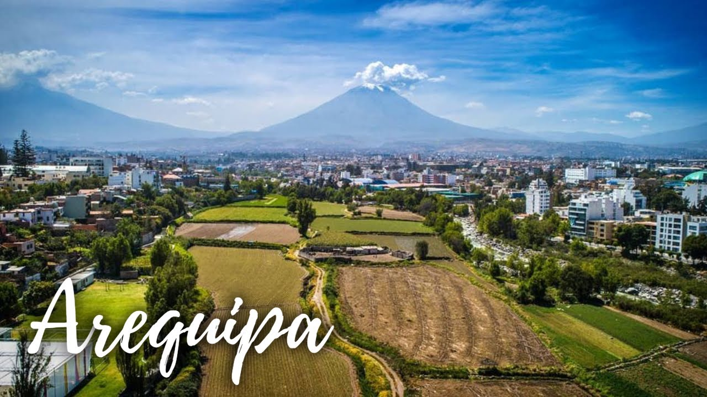

Arequipa es la capital de la época colonial de la región de Arequipa en Perú. La rodean 3 volcanes y cuenta con edificios barrocos construidos de sillar, una piedra volcánica blanca. En su centro histórico, se encuentra la Plaza de Armas, una imponente plaza principal, y al norte de ella está la Basílica Catedral neoclásica del siglo XVII, que alberga un museo donde se exhiben obras de arte y objetos religiosos.
